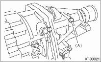

Check the transfer clutch pressure according to the following procedures, in the same manner as line pressure. 
| ST 498897700 | OIL PRESSURE ADAPTER SET |
| ST 498575400 | OIL PRESSURE GAUGE ASSY |
NOTE:
• Before setting in FWD mode test, install the spare fuse on FWD mode switch. (Only models with MP-T)

|
(A) |
Test plug |
• If no oil pressure is produced or if it does not change in AWD mode, the transfer duty solenoid or the control valve body may be malfunctioning.
• If oil pressure is produced in FWD mode, there is the same problem as the AWD mode. (Only models with MP-T)
|
Range position |
ON Duty ratio (%) |
Acceleration opening angle (%) |
Standard transfer clutch pressure kPa (kg/cm2, psi) | |
|
AWD mode |
FWD mode | |||
|
2 (Hold switch ON) |
95 |
Fully opened (100) |
1,000 — 1,200 (10.2 — 12.2, 145 — 174) |
— |
|
60 |
Adjust ON Duty ratio to 60%. |
500 — 700 (5.1 — 7.1, 73 — 102) |
— | |
|
5 |
Fully closed (0) |
— |
0 (0, 0) | |
|
N or P |
5 |
Fully closed (0) |
0 |
— |